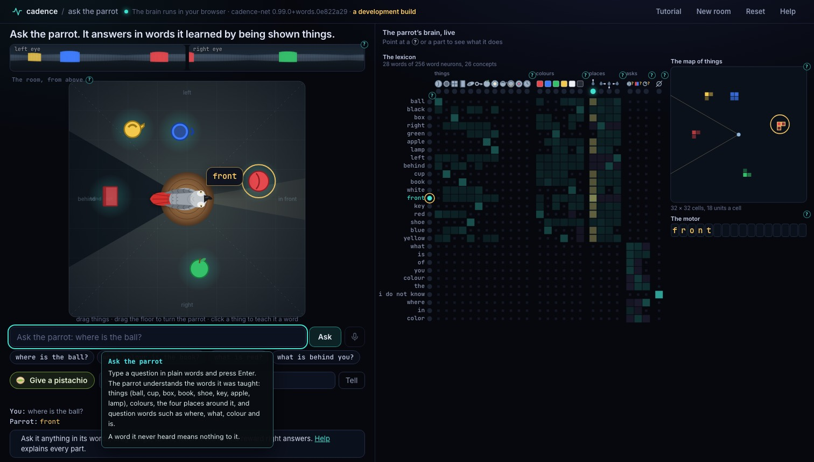

Ask the Parrot
An African Grey parrot sits on its perch in a room full of things. Ask it where the ball is, or what is red, and it answers in words. It learned every one of those words by being shown things and told their names.
What it shows about CadenceA Cadence brain learns words the way an animal does: by being shown a thing and hearing its name. The words are bound to what the brain knows (the things on its map, their colours, where they are around it), so one word works in every question, both ways round, and a new word works after three namings. The brain has a real state and real memory, and it runs and learns in real time, in your browser, like the brain of a living being.
What you see
The left half of the page is the parrot's world; the right half is its brain, live.

- The eyes
- The strip at the top: what the parrot's two eyes see. A parrot's eyes sit on the sides of its head, so each eye sees a wide fan to its own side; the left strip is the left eye, from behind the parrot round to its beak, the right strip the right eye. The eyes meet in front.
- The room
- Seen from above. The parrot sits on its perch in the middle, its red tail behind it. The two lit fans are what its eyes see; the dark wedge behind it is its blind spot. Dashed lines split the floor into the four places the teacher names around the parrot: in front, right, behind and left. A teal glow is where the brain's map holds a thing; a faded outline is a thing held where the thing is not (it moved where the parrot could not see).
- The speech bubble
- What the parrot says: the letters its brain's motor spells.
- The question box
- Type a question, or click one of the questions below it. The microphone beside it is for questions asked aloud, once the parrot has ears.
- The pistachio
- After an answer: give the parrot a pistachio when it was right, or type the right answer and tell it.
- The lexicon
- On the right: one row a word neuron (the words the parrot has heard), one column a concept neuron (the kinds of thing its eyes tell apart, the colours, the four places around it, what a question asks for, and "nothing found"), and every synapse between them as a cell, teal where it excites, violet where it inhibits. The dots light with each neuron's activity.
- The map of things
- The brain's own map of the room: 32 by 32 cells, each with a unit for every kind and every colour. A thing is lit in its colour where the map holds it.
- The motor
- The letters of the word the parrot says, one a slot.
- The steps
- Above the brain, while a question plays: hearing, understood, the map, saying, the motor.
Why it matters
The parrot's words are symbols bound to what its brain knows. "Red" is whatever word it heard while red things held its attention; "behind" whatever word it heard about things behind it. Because the binding lives in synapses between word neurons and concept neurons, the same word works in every question: "what colour is the ball?" goes from the thing to its colour, "what is red?" from the colour to the things, through the same synapses. That is what shows the words are understood and not stored as one-way pairs.
The answers come from the brain's own state. The book behind the parrot lies in its blind spot; the parrot answers "book" to "what is behind you?" because its map holds the book where it last saw it. A word it never heard means nothing to it, and it says "i do not know".
A new word takes three namings, and works at once in every question: where the thing is, its colour, and the other way round. Words bound to concepts are the ground for reasoning with symbols, the next steps of this demo.
The library's words chamber (cadence#326) reads this brain design on twelve fresh brains with words drawn at random for each, beside an LSTM and a transformer of the same size given the same namings and questions.
What you can do
- Ask a question. Type it and press Enter, or click a question under the box. The parrot understands "where is the ball?", "what colour is the cup?" (or "color"), "what is red?", "what is behind you?", "what is in front of you?", "what is left of you?" and the like, in the words it knows.
- Give a pistachio for a right answer. The parrot cracks it, the brain view washes green with the reward's surprise (its dopamine), and the synapses the reward changed flash.
- Tell it the right answer when it was wrong: type the answer beside the pistachio and press Tell.
- Turn the parrot. Drag across the floor, or press the arrow keys. Things move in and out of its eyes' fans; the map holds what it saw.
- Move things. Drag a thing. Moved where the parrot sees it, the map follows; moved within the blind spot, the map holds it where it was last seen.
- Teach it a word. Click a thing: the parrot turns to look at it. Type a word and press Say it, three times. Then ask about it. The kettle (and the drum, the vase and the clock in other rooms) are things it has no word for.
- New room draws other things in other colours; Reset brings back the first room and the brain as it was raised; Tutorial walks through all of this in six steps.
- Point at anything with a small question mark, or any part of the brain, for a short explanation.
How it works
The parrot's brain is cadence.words.Words from the Cadence library, running in your browser in Python (Pyodide). It has three parts, all the library's own.
The senses: the map and the body
Each moment the eyes report every thing they see: its kind, its colour and where it is (the eyes' report is the program's step; finding things in the eyes' images by itself is the next step of this demo). The map of things (cadence.space.map.Map) takes the reports into its own state: a thing enters when it is first seen, its colour rides with it on the same cells, and it stays at its last known place while out of view. The body tells the brain which way it faces, so a place on the map is a place around the body: in front, to the right, behind, to the left.
The lexicon: words bound to concepts
A word takes a free word neuron the first time the parrot hears it. Every word neuron and every concept neuron are joined by a pair of synapses that starts at zero. A naming is a lesson of the library's settling: the word's neuron is driven, the concept neurons settle, and the lesson pulls them toward what the parrot attends to at that moment: the thing's kind, its colour and its place around it. A word's later lessons close a smaller share of its error, so a word keeps what its namings share: "ball" the kind, "red" the colour, "behind" the place.
A question
- Hearing. The question's words drive their neurons, and the concept neurons settle (the brain view plays this sweep by sweep).
- Understood. The most active concept is what the question is about; the read neurons say what it asks for: a thing, a colour or a place. Question words such as "where" and "colour" learned their reads from pistachios.
- The map. The map is asked by settling: where are the things of that kind, of that colour, or on the cells of that place around the body.
- Saying. For each thing found, its concepts, weighted by what the question asks for, drive the word neurons, and they settle.
- The motor. The most active word is heard back, and said: its letters, one by one.
No table maps a word to a concept or a question word to what it asks for: the meaning of every word is in the synapses drawn on the page. With those synapses at zero the same brain answers nothing.
How the parrot was raised
Before the page, a scripted teacher raised the brain the page loads. First naming: 40 rooms of the eight named kinds, 15 namings each (the parrot turns, attends to a thing and hears one word: its kind, its colour or its place). Then pistachios: in 24 rooms the teacher asked 10 questions each about the ball, the cup, the box and the book, never saying the answer; the parrot answered, trying what a question might ask for, and a right answer earned a pistachio. It earned 112 in 152 answers. The teacher said the answer only where there was nothing to find ("i do not know", a word the parrot can say only once it has heard it). So the words that ask ("where", "colour", "what") learned what they ask for from pistachios. The shoe, the key, the apple and the lamp were named and never asked about. The words are the teacher's English; to the brain they are letters.
A pistachio
A right answer earns a pistachio, and the reward goes into the brain (Words.reward): the question's words of asking (those that name no thing, colour or place) learn to ask for what the answer gave, at the reward's surprise: the pistachio less how sure the parrot was of that answer. That surprise is the dopamine the brain view shows. A parrot sure of its answer learns little from a pistachio; an unsure one learns more. A wrong answer earns nothing, and you can tell it the right one (Words.practice).
The numbers
| Reading | Value |
|---|---|
| Questions about the named kinds in 30 rooms the brain never saw (where, colour), right | 284 of 284 |
| Of those, about the four kinds named and never asked about in practice | 126 of 126 |
| "What is red?" and "what is behind you?" the other way round, right | 150 of 150 |
| A thing held out of view, asked about, right | 56 of 56 |
| A kind in a colour it never had in training, right | 32 of 32 |
| A word never taught, or a thing not in the room: "i do not know" | 120 of 120 |
| A new word after three namings, where and colour, right | 48 of 48 |
| With the lexicon's synapses at zero, right | 0 of 284 |
| Pistachios earned while it learned what question words ask for (first half of its answers, second half) | 112 of 152 (.71, .76) |
| Learned parameters (the lexicon's synapse pairs) | 6,656 |
| The promise test on the page (questions both ways, from memory, a pistachio, a new word, a word never taught, the tutorial) | 11 of 11 |
The readings of the brain the page loads are in ask/evidence/raised-20261113-2047-0e822a29.json (written by tools/raise_brain.py, which raised it); the promise test on the page in the promise-*.json files of the same folder (tools/check_page.py). One brain, raised once: these numbers read a single parrot, not a population.
Limits
- The eyes report, the retina is next. The brain is given each seen thing's kind, colour and place; it does not find things in the images of the eyes strip.
- Questions are words, not sentences. The brain hears a question's words together, with no order: "where is the ball?" and "ball the is where?" are one question to it. Words it never heard are ignored.
- One thing of a kind. Each room has one thing of each kind; "the red ball" among several balls is a later rung.
- No past or future. "Where was the ball?" (from the brain's records) and "where will it be?" (from its forecast) are the next rungs of the words lane.
- No ears. Questions are typed; the microphone button opens when the brain hears raw sound.
- Pistachios teach what a question asks for. The names of things, colours and places are learned from naming; a pistachio teaches the words of asking.
- A development build. The page runs a wheel built from a development branch of the library (the commit is in the page's header); its numbers are from that build.
- One brain. The numbers read the one brain the page loads; the library's chamber reads many.